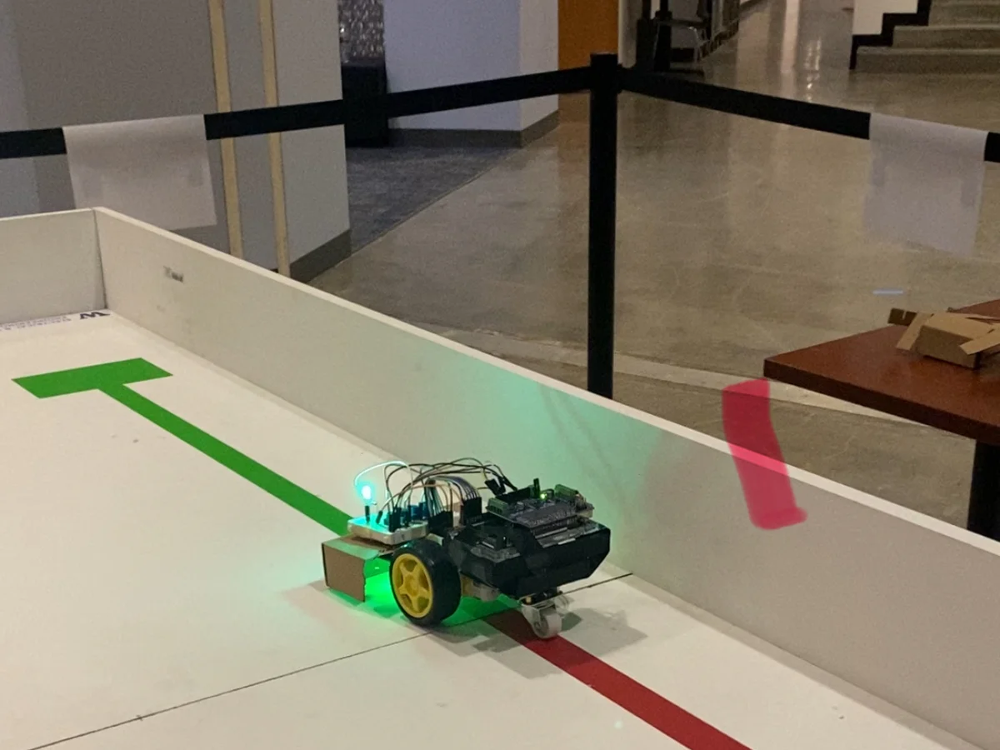

Arduino Line-Following Robot
Team project for EE201: Computer Hardware Skills, University of Washington
As a part of my hardware fundamentals course, my team was tasked with designing a line-following robot capable of reliably tracking a line course in real time. The system had to integrate sensors, control logic, and mechanical design while meeting strict performance requirements. I was tasked with the design of the embedded system and its sensor interface, PCB design, and control logic. Our group's goal was to achieve stable closed-loop control while ensuring robust sensor readings. I helped design a custom PCB in KiCad to integrate line sensors with an Arduino microcontroller and implement closed-loop control logic to adjust motor outputs based on sensor feedback. I also contributed to mechanical design by modeling and fabricating a 3D-printed chassis in Fusion360. We iteratively tested and tuned our sensor thresholds and control parameters to improve tracking accuracy. Our robot achieved 100% course completion with consistent real-time tracking accuracy and ranked top 10 out of 40+ teams. This project reinforced my understanding of embedded firmware development, PCB design, and hardware-software integration.